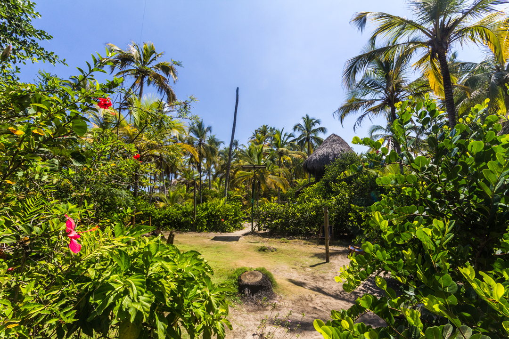
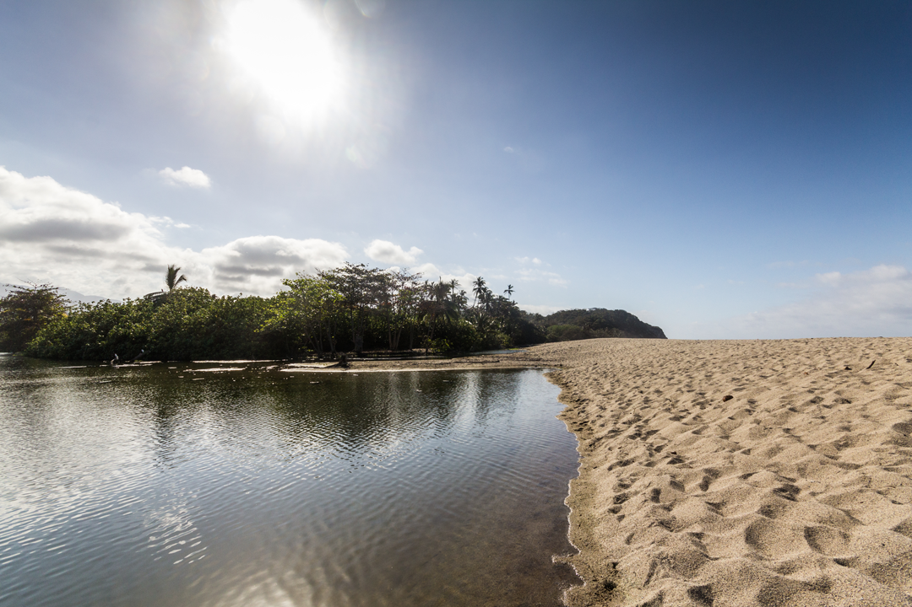
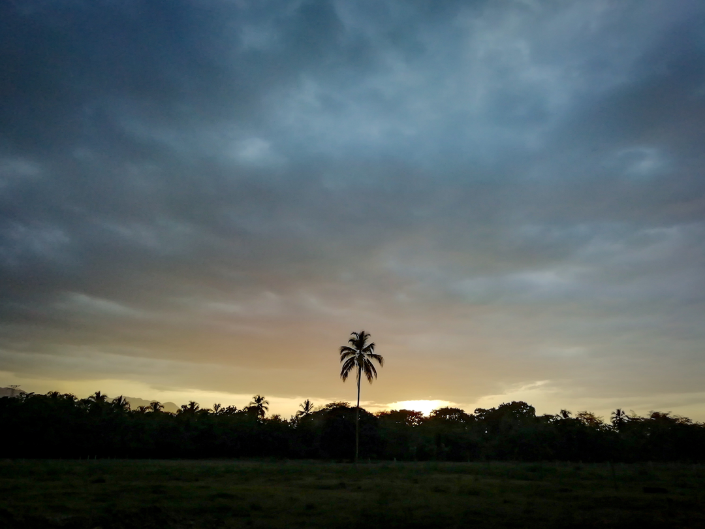

<div class="modal">
  <div class="modal-body">
    <header class="modal-body-header">
      
      
      

    </header>
    <section class="modal-body-main">
      <div class="modal-body-main-imagenes">
        
        <div class="contendor-imagenes">
          
        
        </div>
      </div>
      <div class="modal-body-main-contenido">
        <a [routerLink]="['/']">x</a>

        <h1>GUACHACA </h1>
        <h3>Descubre el Encanto Rústico de Guachaca </h3>
        <p>Ubicado en el corazón de la exuberante costa caribeña de Colombia, Guachaca te da la bienvenida con sus brazos abiertos y su belleza natural inigualable. Este pequeño paraíso escondido es el destino ideal para los viajeros que buscan escapar del bullicio de la ciudad y sumergirse en la serenidad de la naturaleza virgen. </p>
          <h2>Atracciones Turísticas </h2>
          <ul>
            <li>
              <strong> Playas de Ensueño:</strong> Las playas de Guachaca son conocidas por su arena suave y aguas cristalinas. Relájate bajo el cálido sol caribeño o aventúrate en emocionantes actividades acuáticas como el surf y el buceo. 
            </li>
            <li>
            <strong>Cascadas Escondidas: </strong>Explora las impresionantes cascadas ocultas en la selva tropical circundante. Sumérgete en piscinas naturales y disfruta de un refrescante chapuzón en medio de la exuberante vegetación. 
            </li>
            <li>
            <strong> Cultura Local: </strong>Conoce a la gente amigable y hospitalaria de Guachaca. Descubre la rica herencia cultural de la región a través de su música, danzas tradicionales y deliciosa gastronomía caribeña. 
            </li>
          </ul>

          <h2>Experiencias Inolvidables </h2>
          <ul>
            <li>
            <strong> Ecoaventuras: </strong>Embárcate en emocionantes excursiones de senderismo por los senderos selváticos de Guachaca. Descubre la diversidad de la fauna y flora locales mientras te maravillas con las vistas panorámicas de la costa y las montañas circundantes. 
            </li>
            <li>
            <strong>  Pesca Tradicional: </strong>Únete a los pescadores locales y aprende las técnicas de pesca tradicionales. Experimenta la emoción de atrapar tu propia cena y disfruta de un festín de mariscos frescos preparados a la perfección. 
            </li>
            <li>
            <strong> Festivales y Eventos: </strong>Sumérgete en la animada atmósfera de los festivales locales. Baila al ritmo de la música caribeña, participa en coloridos desfiles y degusta deliciosas especialidades culinarias en los mercados callejeros. 
            </li>
          </ul>

          <h2>Hospedaje y Gastronomía </h2>
          <ul>
            <li>
              Guachaca ofrece una variedad de opciones de hospedaje, desde acogedoras cabañas junto a la playa hasta lujosos resorts con todas las comodidades. Disfruta de la auténtica cocina caribeña en los restaurantes locales, donde los chefs expertos preparan platos frescos y sabrosos con ingredientes locales. 
            </li>
           
          </ul>
          <h2>Cómo Llegar  </h2>
          <ul>
            <li>
              Guachaca se encuentra a solo unas horas en coche desde la ciudad de Santa Marta. Los visitantes pueden tomar un pintoresco viaje en automóvil a lo largo de la costa, disfrutando de impresionantes vistas panorámicas en el camino. 
            </li>
           
          </ul>
          <p>En resumen, Guachaca es mucho más que un destino turístico; es una experiencia transformadora que te conecta con la naturaleza y la autenticidad de la cultura caribeña. Así que deja atrás el estrés y las preocupaciones, y ven a descubrir el encanto rústico de Guachaca. ¡Te esperamos con los brazos abiertos para una experiencia inolvidable en el paraíso caribeño! </p>
        
      </div>
    </section>
    <footer>
      
    </footer>
  </div>
</div>
